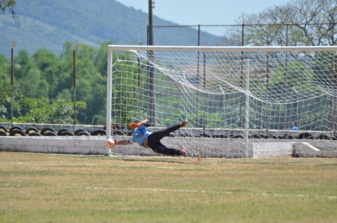

Originário de Apiaí, Rogério é destaque por onde passa. Com uma presença marcante e sorriso contagiante, ele não é apenas um jogador, mas um símbolo de raça, esforço e carisma.

Seus maiores feitos
Sua carreira é composta por coisas que vão além da vitória, momentos que jamais serão esquecido. Dentre eles, há:
Um trofeu de "Fair Play" após separar uma briga no campo;
Dar mortal para trás 50 vezes seguidas;
Pescar 235 peixes em uma tarde (Não é história de pescador);
Conseguir tirar o Erick de casa (só às vezes).
Dia dos pais
Apesar de seu filho mais velho não passar tanto tempo com ele e não se interessar tanto pelos seus hobbies como pesca, ele com certeza deve amar o pai que e dedicou o estudo para fazer esse projeto mediocre com a intenção de ser especial, portanto, como presente receba esse atestado: